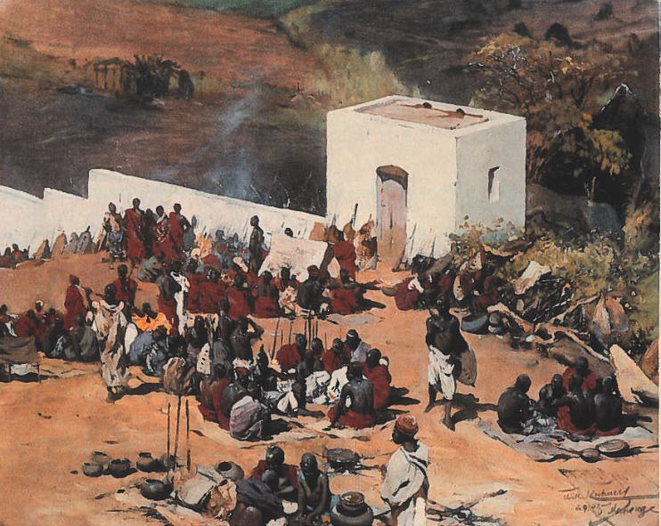

Generelle Informationen zur Kolonialzeit und dem Maji-Maji Krieg in Deutsch-Ostafrika
Title description, Dec 7, 2017
Deutsch-Ostafrika wurde 1884 von der deutschen Kolonialmacht erobert und gegründet. Schon seit der Eroberung kam es zu Aufständen, welche aber meistens niedergeschlagen wurden. Jedoch eskalierte die Situation 1907, als es schliesslich zum Maji-Maji Krieg kam, bei dem sich 20 Stämme gegen die Deutschen vereinigten, als Widerstandsaktion.
Gründe dieser Eskalation waren die Respektlosigkeit der Deutschen, das Verbot der Grosswildjagd, Bestrafungen bei Versäumnis von Anordnungen sowie der erzwungene Anbau von Baumwolle.
Eines der deutschen Ziele war es ihre Wirtschaft zu steigern und an Ressourcen zu gewinnen. Dies wollten sie durch den Anbau von Baumwolle erreichen. Jedoch war dies nicht profitabel. Deswegen entschieden sie sich eine Hüttensteuer zu erheben. Später folgte dann auch eine Kopfsteuer. Wer seine Steuern nicht bezahlen konnte, musste diese im Gefängnis mit Zwangsarbeit abarbeiten. Zudem benutzten die Deutschen die Ostafrikaner als Zwangsarbeiter für den Bau ihrer Eisenbahn.
Die deutsche Kolonialmacht erzwang ihre Herrschaft durch Gewalt. Dies lässt sich anhand der Gefängnisstrafen und Bestrafung bei jeder Missachtung der Anweisungen erkennen. In Deutsch-Ostafrika handelte es sich um eine formelle Herrschaft. Die deutschen Gouverneure und Beamten übernahmen die Herrschaft über die Ostafrikaner sowie deren Jumben. (Jumben sind eine Art Bürgermeister der afrikanischen Dörfer). Dies konnten sie durch Krieg und Gewalt durchsetzen.
Die Deutschen nahmen keine Rücksicht auf die Kultur der Afrikaner. Beispielsweise bauten sie die Produkte an, die der Kolonialmacht nutzen anstatt der Produkte, die die Afrikaner benötigten.
Video Völkermord und Kolonialismus
Für zusätzlichen Kontext ist hier noch ein Video zur Kolonialzeit und Völkermord eingebettet.
Grenzgebiet Maji-Maji Krieg
Orange auf der Karte eingezeichnet ist das Kriegsgebiet des Maji-Maji Krieg. Dies wurde von der Quelle "Maji-Maji-Krieg: Stammesgebiete und Kriegsgebiet" auf eine interaktive aktuelle Karte der Welt übertragen.
Folgendes ist zu beachten:
- Die roten Punkte sind Bezirksauptorte
- Die schwarzen Punkte sind Ortschaften
- Die gelben Dreiecke sind Berge
- In schwarz mit "fetter" Schrift sind Siedlungsgebiete gekennzeichnet